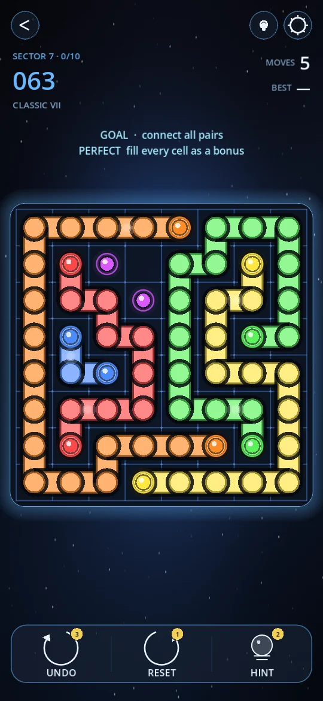

Flow-Puzzles sehen einfach aus: ein Raster, ein paar farbige Punkte, eine Regel. Verbinde jedes Paar gleicher Punkte mit einer Linie und lass die Linien sich nicht kreuzen. Bis du an ein Level kommst, in dem jede Farbe eine andere zu blockieren scheint, und einfach nicht mehr das richtige Wort ist.
Die gute Nachricht: Ein gut gemachtes Flow-Puzzle braucht nie Glück. Für den nächsten Zug gibt es immer einen Grund. Das sind die Strategien, die wir selbst nutzen, ungefähr in der Reihenfolge, in der ein Rätsel nach ihnen verlangt. Wir haben sie auch in den Solver eingebaut, der jedes Level in Circuit Trace bewertet. Die Schwierigkeit wird also genau in diesen Schritten gemessen.



Die Regeln in einem Satz
Verbinde jedes Paar gleichfarbiger Punkte mit einem Weg, der nach oben, unten, links oder rechts verläuft. Wege dürfen sich nicht kreuzen und kein Feld teilen. In den meisten Rätseln, auch in den schwierigeren Leveln von Circuit Trace, muss außerdem jedes Feld gefüllt werden.
Genau diese letzte Regel macht Flow-Puzzles mit Logik lösbar. Wenn jedes Feld genutzt werden muss, bedeutet eine leere Ecke, die keine Linie erreichen kann, dass irgendwo ein Fehler steckt.
1. Beginne an Rändern und Ecken
Ein Feld in einer Ecke hat nur zwei Nachbarn. Ein Punkt in einer Ecke kann also höchstens in zwei Richtungen, oft nur in eine. Linien am Spielfeldrand sind auch selten falsch, weil sie die Mitte für alle anderen frei lassen. Wenn du nicht weißt, wo du anfangen sollst, fang am Rand an.
2. Mach die erzwungenen Züge
Suche ein Linienende mit nur einem freien Nachbarn. Dorthin muss es. Zeichne diesen Schritt und schau neu: Ein erzwungener Zug schafft oft den nächsten. Ein großer Teil jedes leichten und mittleren Rätsels löst sich so, Schritt für Schritt.
3. Lass nie eine Sackgasse zurück
Ein leeres Feld mit nur einem offenen Nachbarn ist eine Sackgasse. Auf einem Feld, das komplett gefüllt werden muss, kann nur ein Punkt am Ende einer Linie sitzen, eine Sackgasse ohne Punkt ist also ein Fehler. Erzeugt ein Zug eine, ist der Zug falsch. Diese eine Regel schließt mehr falsche Züge aus als jede andere.
💡 Prüfe die Ecken, die du gerade gebaut hast. Jedes Mal, wenn du eine Linie abknickst, schau auf das Feld innerhalb der Kurve. Hat es nur noch einen Zugang, muss etwas anderes es füllen.
4. Linien laufen nicht an sich selbst entlang
In einem Rätsel mit einer Lösung läuft eine Linie fast nie direkt neben sich selbst zurück wie eine Haarnadelkurve. Ginge das, könnte sie genauso gut die Abkürzung nehmen, und das Rätsel hätte zwei Lösungen. Würde eine Route eine Linie sich selbst berühren lassen, probiere zuerst den anderen Weg.
5. Finde die Engpässe
Eine Lücke, die ein Feld breit ist, kann nur eine Farbe nutzen. Finde heraus, welche Farbe sie braucht, und alle anderen müssen außen herum. Engpässe teilen das Feld oft in getrennte Räume, und kleinere Räume löst man leichter einzeln.
6. Führe das weite Paar außen herum
Liegen zwei Punkte derselben Farbe weit auseinander, läuft ihre Linie meist am Rand entlang statt durch die Mitte. Eine lange Linie durch die Mitte teilt das Feld in zwei Hälften und sperrt die anderen Farben ein. Probiere zuerst den Weg außen herum.
7. Nahe Paare sind meist einfach
Zwei Punkte direkt nebeneinander oder einen Schritt entfernt verbindest du fast immer auf dem kürzesten Weg. Zeichne sie früh. Dann sind diese Felder vom Brett und du weißt, wo die anderen Linien nicht hin können.
8. Probiere einen Zug und such nach Ärger
Wenn nichts mehr erzwungen ist, wähle ein Linienende mit nur zwei Möglichkeiten. Probiere eine im Kopf und folge den erzwungenen Zügen, die daraus entstehen. Führt das in eine Sackgasse oder zu einer Farbe, die ihren Partner nicht mehr erreicht, ist die andere Möglichkeit richtig. Hier leben die schwereren Rätsel, und genau das zählt unser Solver als „Nachdenken“, wenn er ein Level bewertet.
9. Lerne, was dir die Extras sagen
Viele Flow-Puzzles haben Spezialfelder. In Circuit Trace ist jedes davon auch ein Hinweis:
- Dioden zwingen eine Linie, in Pfeilrichtung weiterzugehen, was oft auf einen Schlag eine ganze Route festlegt. Siehe Dioden.
- Portale lassen eine Linie über das Feld springen, und in diesem Paket gehört jedes Portal zu einer Route. Siehe Portale.
- Wände sperren den Schritt zwischen zwei Feldern und stehen meist genau dort, wo die naheliegende Route verlaufen würde. Siehe Labyrinth.
- Ein Würfel hat überhaupt keine Ränder, Strategie 1 fällt also weg und du musst dich auf die anderen stützen. Siehe 3D-Würfel.
Weiterlesen
- Bereit für 9×9 und 10×10? Lies den Leitfaden für Fortgeschrittene: abgeschlossene Bereiche, Ecken, Trennungen prüfen und Züge sicher testen.
- Pfeilfelder verwirren dich? Lies, wie Dioden funktionieren.
- Linien, die springen? Lies, wie Portale funktionieren.
- Selbst eins bauen? Erstelle dein eigenes Flow-Puzzle im Editor.
Übe in deinem Tempo
Jeden Tag ein neues Feld? Spiele das kostenlose Tagesrätsel direkt im Browser. Es ist dasselbe Rätsel wie die Tages-Challenge in der App.
Am schnellsten wirst du besser mit Rätseln, die mit dir wachsen. Das Paket Klassisch von Circuit Trace beginnt bei 5×5 und endet bei 10×10, ganz ohne Zusatzregeln. Der Endlos-Modus erzeugt neue Rätsel in sieben Schwierigkeitsstufen, und die Tages-Challenge gibt allen jeden Tag dasselbe Feld.
Spiele Circuit Trace kostenlos auf Google Play: über 700 Flow-Puzzles, vom ersten Feld bis zum Würfel.
Häufige Fragen
Lässt sich jedes Flow-Puzzle ohne Raten lösen?
Ein gut gemachtes Rätsel mit einer Lösung ist immer mit Logik lösbar. Bei den schwersten Leveln gehört dazu, einen Zug im Kopf auszuprobieren und ihn zu verwerfen, wenn er in eine Sackgasse führt.
Was ist der beste erste Zug bei einem Flow-Puzzle?
Beginne mit Punkten in Ecken und an den Rändern und mit jedem Linienende, das nur einen freien Nachbarn hat. Diese Züge sind fast nie falsch.
Muss man jedes Feld füllen?
Bei vielen Flow-Puzzles ja. In Circuit Trace verlangen die ersten Level nur, die Paare zu verbinden, und jedes Feld zu füllen bringt den dritten Stern. Spätere Level verlangen ein volles Feld.